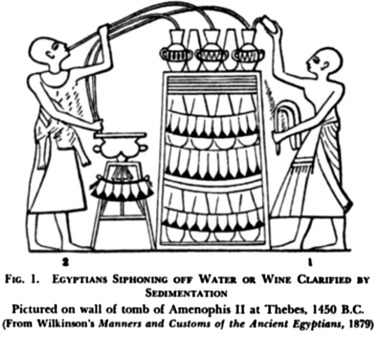
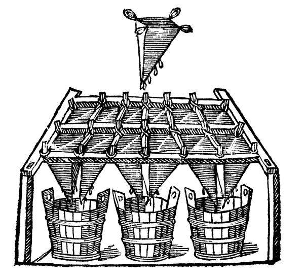
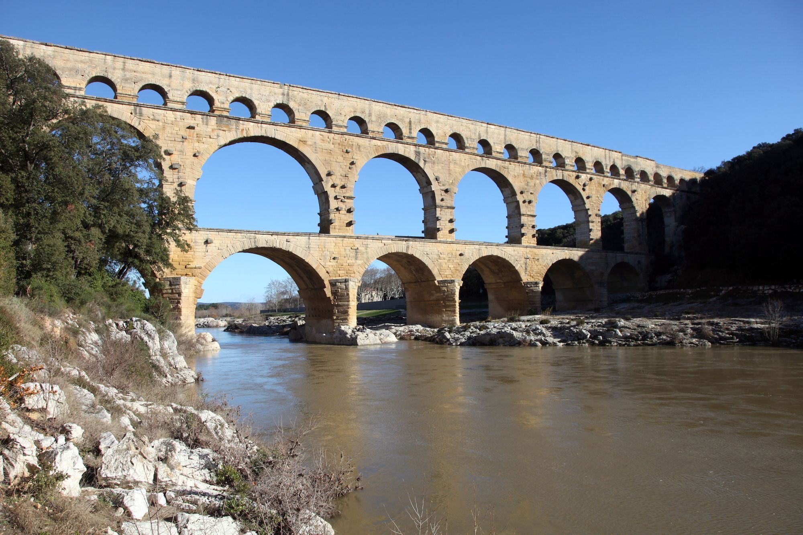
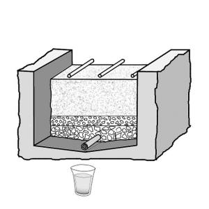

Tech: Now and Then

1 June 2021

A bunch of children lined up to drink water from a water fountain.
Water is a thing we, as humans, very much take for granted. At any time, we can either turn on the faucet for water if the tap water is decent enough or just attach a filter that makes the water pretty much safe to consume, any time we want. We also don't really have to worry about any adverse effects from any of it. But how did we used to do it? How did we not get sick or die from water that wasn't as good? Finally, what was the first true way that water was "filtered"? Well, the answer to that last question takes us all the way back to Neanderthals, who had a rather... unique way to do it.
Most early people, due to not having any sort of technology or basic way to filter it, used to filter water by taste. That means that they would drink the water that "seemed" fine. This water was mostly collected from nearby rivers and lakes, not wells or trenches. Unfortunately, this would usually lead to issues due to taste not being a decent way to test if water had bacteria/disease/etc. in it, so they mostly rolled the dice day-to-day to see if they'd have any major issues. The first truly known water filtration was done by Egypt, with the writing on tombs and Sanskrit writings being the proof.
An illustration found on the tomb of Amenophis II at Thebes that seems to illustrate the way Egyptians filtered water. Or it could just be an Egyptian getting wasted, who knows.
Many different water treatment methods are seen in the Sanskrit medical writings known as the Sus'ruta Samhita, which was created around 16,000 BCE. The methods listed are boiling it over fire, heating it under the sun, dipping heated iron into the water, filtering it through gravel or sand, or using a Strychnos potatorum seed (used in traditional medicine) and a stone called "Gomedaka". On the walls of the Egyptian rulers Amenophis II and Rameses II, there are pictures of some sort of water-clarifying machine. The purification of water is also mentioned in the Bible, where Moses and the Israelites find that the water in Marah is bitter, so God puts a tree in the water to make it sweeter. Another instance of it in the Bible is in Jericho, where the residents complained to Elisha that the water was "naught". so the prophet put salt in it and it was "purified". Jericho also had a system of wells that would develop into a water transport system, and that was ultimately decent water. Originally, they were transported through dug-out channels of dirt and gravel, but they later evolved into hollow tubes made out of either clay or wood.
An illustration of the Hippocrates Sleeve, which filtered water through cloth.
In around 10,000 BCE, a Spartan lawgiver invented a drinking cup that could make mud stick to its side. Later on, Hippocrates developed a device called the "Hippocrates Sleeve" that was a cloth bag to be used on boiled rain water, which eliminated the bad smell and "hoarseness" of the water. Both the Greeks and Romans had some in-depth water treatment methods, with the placement of macerated laurels (a type of oil from a leaf) in rainwater by Diophanes and the immersion of a bag of crushed barley and bruised coral by Paxamus. Because of the increase of urban populations in Greece, they had to store water in wells and transport it to people in yet another transportation system. High-class Greeks often used aeration basins for water purification.
An example of a Roman aqueduct, the main way their water was transported.
The Romans are the most well-known civilization that heavily prioritized water transportation through their massive structures known as aqueducts. Most of their water came from river, spring, or the ground. They also built dams in rivers, which caused lakes to form over these rivers. This is still used to create lakes out of rivers today. Mountain water was the most used rivers to dam, as they were heavily sought after for their purity and taste. For the main water transportation, of course, aqueducts were used. These aqueducts were able to transport water for tens of miles, which was massively impressive for such an old civilization. Plumbing was made up of concrete, rock, bronze, silver, wood, or lead.
After the fall of the Roman empire in ~500 CE, there was very little development in the water treatment side of history. In the Middle Ages, countless cities sprung up and had wooden plumbing developed for them. The water was often extracted from wells or rivers, which made them extremely unhygienic once people started dumping waste and excrement into the water, which made many sick and possibly could kill them. To solve this issue, water-bearers would bring water from further away from the town where the water would be unpolluted.
A diagram of a rapid sand filter, showing how the water would first go through sand, then gravel, then bigger gravel to get all of the possible contaminates out.
During 1,600-1,700 CE, filtration became the preferred way to have water for many communities, and more and more towns were considering clean drinking water for all its citizens. In 1703, French scientist La Hire proposed that every household in Paris should have a rainwater cistern and a sand filter, which had covered and elevated cisterns to prevent moss and freezing. Almost exactly one century later, the town of Paisley, Scotland introduced the first municipal water purifying plant in the world. Established in 1804, the plant used gravel and concentric sand filters to treat water, which was then distributed via a horse and cart. In 1827, the slow sand filter was created, which used up a lot of land and could not keep up with rapid population growth. A rapid sand filtration method was used throughout the United States that, as the name states, rapidly filtered water much faster than the average slow sand filter. Town officials in London noticed that cholera deaths had increased after the water quality was increased, which got them to pass the Metropolitan Water Act of 1852 to ensure all water would be filtered. After the Industrial Revolution, water around the world became much more polluted, and many more sophisticated water treatment plans are being developed each and every day to make sure everyone can have decent access to drinking water.